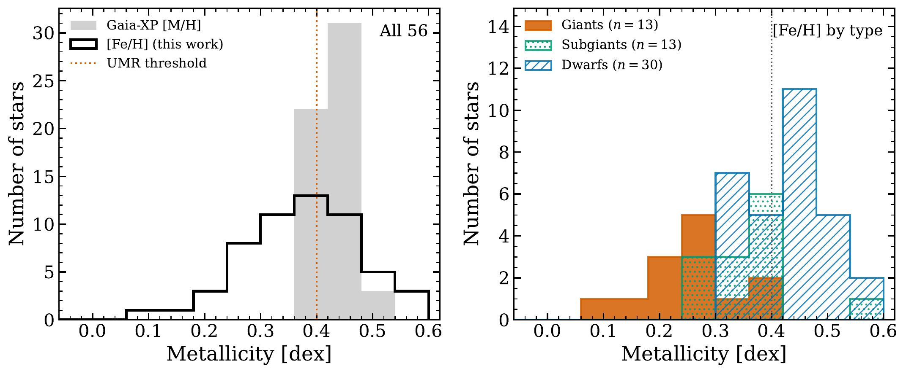
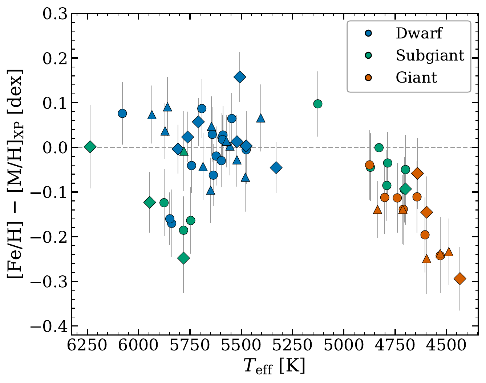
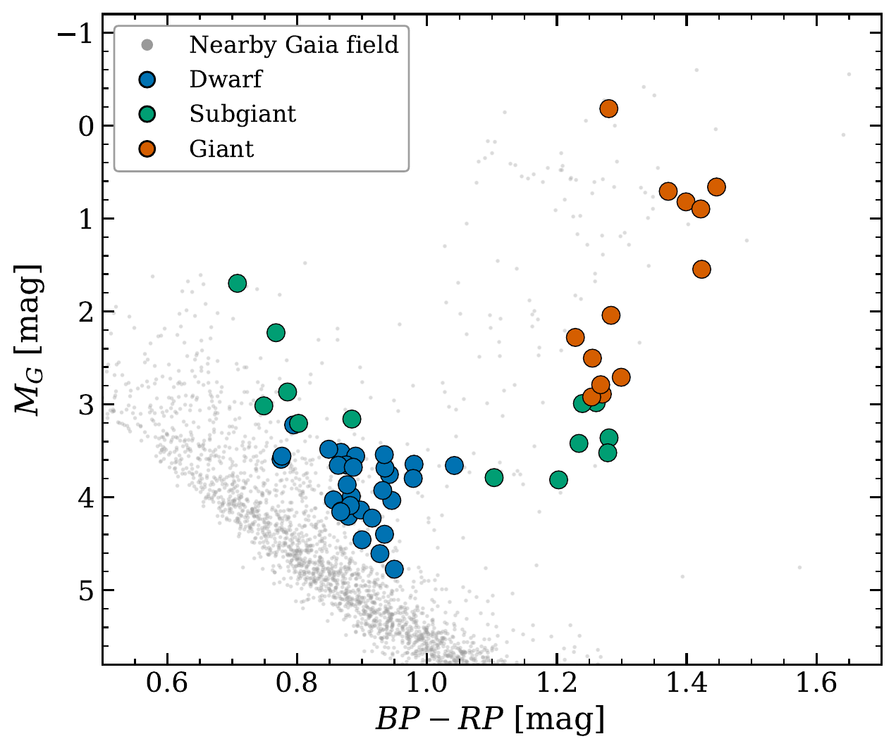

A high-resolution census of extreme metallicity
PANTERA finds and characterizes the most metal-rich stars in the solar neighborhood. These stars trace radial migration from the inner Galaxy and the Galactic bar, calibrate stellar models, and mark targets for planet searches.
Testing the metal-rich sky
Gaia DR3 measures metallicities for ~175 million stars from XP spectrophotometry, but few of its calibrators are metal-rich. We select candidates from those metallicities and observe them at high spectral resolution to measure iron abundances and test the XP scale in the metal-rich tail.
For the 56 stars observed so far, the XP metallicities match our measurements for the dwarfs but run high for the cool giants. This bias must be corrected before the XP metal-rich candidates can map the inner disk.


Why these stars matter
- They trace radial migration, the Galactic bar, and disk heating.
- They calibrate red-giant mass loss and stellar opacity models.
- They extend planet searches where the planet-metallicity relation stays poorly constrained ([Fe/H] > +0.3).
- They check the Gaia-XP metallicity scale at its metal-rich end.
The observed sample
